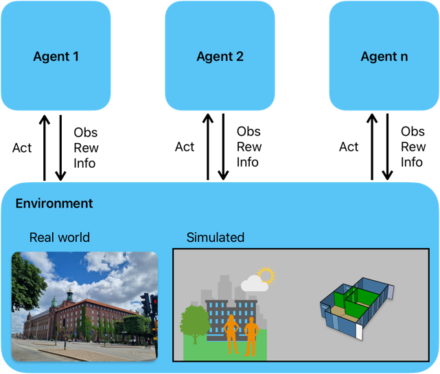

Overview#
There are various ways to classify control methods, one of which is learning-based approaches, such as Reinforcement Learning (RL). In scenarios where multiple agents operate simultaneously in an environment, they can take actions, receive observations, and obtain rewards from it. This interaction is utilized to learn an optimal policy that maps observations to actions. The general scheme of RL can be seen in the following image.
{kind=link}
During the learning process, an algorithm attempts to predict the cumulative reward that the agents will receive if they follow a certain policy. This prediction is represented by a Value function V(obs) or an Action-Value function Q(obs,act). A modern approach to predicting the V or Q functions involves using deep neural networks (DNN) to approximate these values. When DNNs are used, the methodology is referred to as Deep Reinforcement Learning (DRL), and the DNN model is known as the policy.
In eprllib, we use EnergyPlus to model the environment and RLlib as a framework for DRL to train, evaluate, save, and restore policies.
Installation#
To install EnergyPlusRL, simply use pip:
pip install eprllib
Usage#
Import eprllib.
Configure your custom or build-in Reward functions, Action space and action functions and Dinamic episode properties.
- Configure an EnvConfig object to feed EnergyPlus Python API and RLlib with the environment configuration based on the EnergyPlus model,
specifying the parameters required (see eprllib.Env.EnvConfig).
Configure RLlib algorithm to train the policy.
Example configuration#
Import eprllib (and the libraries that you need).
import ray
from ray.tune import register_env
from ray.rllib.algorithms.ppo.ppo import PPOConfig
import eprllib
from eprllib.Env.EnvConfig import EnvConfig, env_config_to_dic
from eprllib.Env.MultiAgent.EnergyPlusEnv import EnergyPlusEnv_v0
BuildingModel = EnvConfig()
BuildingModel.generals(
epjson_path='path_to_epJSON_file',
epw_path='path_to_EPW_file',
output_path='path_to_output_folder',
)
BuildingModel.agents(
agents_config = {
'Thermal Zone: Room1':{
'Agent 1 in Room 1': {
'ep_actuator_config': (),
'thermal_zone': 'Thermal Zone: Room 1',
'actuator_type’: 3 ,
'agent_id': 1,
},
}
}
)
# Start a Ray server.
ray.init()
# Register the environment.
register_env(name="EPEnv", env_creator=lambda args: EnergyPlusEnv_v0(args))
# Configure the algorith and assign the environment registred.
algo = PPOConfig ( )
algo.environment(
env = "EPEnv",
env_config = env_config_to_dict(BuildingModel)
)
# Train the policy with Tune.
tune.Tuner(
'PPO',
tune_config=tune.TuneConfig(
mode="max",
metric="episode_reward_mean",
),
run_config=air.RunConfig(
stop={"episodes_total": 10},
),
param_space=algo.to_dict(),
).fit()